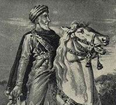

Hasan Sabbah (1054 -1124)

Ýsmaili Devleti'nin kurucusudur. Büyük Selçuklu Devleti'nin baþ edemediði örgütü ve eylemleriyle dehþet saçmýþ, aralarýnda meþhur Nizamülmülk'ün de bulunduðu devletin ileri gelenlerini, kendilerine özgü metotlar ve suikastlarla öldürtmüþtür. Kurduðu örgütü ve kendine baðlý adamlarý ona olan baðlýlýklarýyla dikkatleri üzerlerine çekmiþlerdir. Selçuklular kendisi ile mücadeleyi devlet politikasý haline getirdikleri halde yaþadýðý süre boyunca onunla baþ edememiþlerdir. Risâle-i Nur'da, Afyon Mahkemesinde savcýnýn iddianamesi vesilesiyle ismi anýlmaktadýr. Künyesi Hasan bin Ali bin Muhammed bin Cafer bin Hüseyn bin Muhammed es-Sabbah þeklindedir.Hasan Sabbah'ýn 1054 tarihinde Kum kentinde doðduðu rivayet edilmektedir. Eserinde verdiði bilgilerle soyunu Yemen'de hüküm sürmüþ olan Himyeri krallýðýna dayandýrmaktadýr. Ýfadelere göre babasý Yemen'den Küfe'ye göç etmiþ, buradan Kum ve Rey þehrine geçmiþtir. Ancak, Himyeri asýllý olduðu iddiasý tartýþmalýdýr. Bunun dýþýnda Rey þehrinde doðduðunu nakledenler de vardýr.
Hasan, ilk derslerini babasýndan aldý. Baba, oðlunun eðitimiyle yakýndan ilgilendi. Ýlmi birikimi olup kelam, mantýk, felsefe, fýkýh ve riyaziyat alanýnda önemli bilgileri kendisine verdi. Hasan'ýn Büyük Selçuklu Devleti veziri Nizamülmülk ile arkadaþ olduðu ve ayný hocadan ders aldýklarý tarzýndaki bilgiler, söz konusu þahýslarýn doðum tarihleri göz önüne alýndýðýnda yakýn bir ihtimal olarak görülmemektedir. Bu bilginin dýþýnda, arkadaþ olduklarý halde sonradan aralarýnýn bozulduðu, Hasan Sabbah'ýn Nizamülmülk'ün desteðiyle sarayda görev aldýðý da nakledilmektedir.
Yaþý ilerledikçe ilme meraký artan Hasan, eðitim amacýyla Rey þehrine gitti. Ailesinin etkisiyle Þiiliðin Ýmamiyye itikadýna baðlý olmakla birlikte, daha sonra Fatimi müntesiplerinin etkisiyle Ýsmailiyye mezhebine baðlandý. Bir süre sonra Rey þehrinden ayrýlarak Ýsfahan'a gitti. Burada iki yýl kadar kaldý. Daha sonra Azerbaycan, Musul, Sincar, Meyyafarikin (Silvan), Rahbe, Dýmaþk, Sayda, Sur ve Akka þehirlerini gezdi. Akka'dan Mýsýr'a geçti. Kahire'de Fatými halifesi ile görüþtü. Halife kendisine yakýn ilgi gösterdi. Bu arada dolaþtýðý beldelerde Ýsmaili itikadýný yaymaya çalýþtý.
Hasan Sabbah, Fatimi halifesi Müntasýr Billah'tan sonra geliþen veliaht tayin iþlerine müdahale etmeye kalkýþýnca yöneticilerle arasý açýldý. Yaptýðý muhalefetten ötürü önce tutuklandý, arkasýndan da ülkeden çýkartýldý. Ýskenderiye üzerinden ve deniz yoluyla Mýsýr'dan ayrýldý. 1081 yýlýnda Ýsfahan'a vardý. Ýran'ýn muhtelif þehirlerini dolaþarak yýllarca Batýniliði yaymaya çalýþtýr. Ýran'ýn kuzey taraflarýndaki daðlýk bölgelerde yaþayan ve devletten baðýmsýz, kendi baþlarýna buyruk olan savaþçý bir kavimle yakýn temasa geçti. Adamlarý vasýtasýyla giriþtiði faaliyet sonucu buradakileri kendine baðlamayý baþardý. Bu arada bölgede yaþayan halký da önemli ölçüde etkiledi.
Kendine baðladýðý güçlerle devlet için tehlike teþkil etmeye baþlayan Hasan Sabbah'ýn faaliyetleri Selçuklular tarafýndan dikkatle izleniyordu. Son geliþmeler üzerine Nizamülmülk, Hasan Sabbah'ýn tutuklanmasý emrini verdi ancak, bu mümkün olmadý. Önce Kazvin'e ve oradan da meþhur Alamut Kalesi'ne giderek buraya yerleþti. Alamut Kalesi'ni karargah yaptý. Akabinde 1090 yýlýnda Ýsmaili Devleti'ni kurdu. Sýðýndýðý kalenin ele geçirilmesini önlemek için yeni savunma tedbirleri aldýðý gibi, uzun süre kendilerine yetecek miktarda yiyecek stokunu da saðladý.
Hasan Sabbah bir süre Fatýmilerle iliþkisini devam ettirdi. Fatýmiler ikiye ayrýldýktan sonra imam olarak Nizar'ý destekledi ve adýna hutbe okuttu. Kendi akidesini müridlerine öðretmeye baþladý. Kendilerine karþý olanlarýn öldürülmesinin dini bir vazife olduðu inancýný aþýladý. Müritlerinin eðitimini kendisi üstlendi. Bunlarýn eðitim ve öðretime tabi tutulmalarýndan çok, imamýn rehberliðini ön plana çýkardý. Ýmamlarýn masumiyetinden hareketle, her devirde bunlarýn rehberliðine ihtiyaç olduðu, dini meseleler için aklýn yeterli olmadýðý, Allah'ý iyi tanýmak için imamlarýn yardýmýna gereksinim olduðunu bildirdi.
Dine davet eden ve "dai" olarak adlandýrýlan adamlarý vasýtasýyla faaliyetlerini sürdürdü. Ýnsanlarý etkilemek için farklý yöntemlere baþvurdu. Böylece Batýnilik Hasan Sabbah'ýn þahsýnda yeni bir kimlik kazandý. Dailer önceleri insanlarý, masum imam adýna davet ederken, yeni bir gurup ortaya çýkmaya baþladý. Sabbah'a baðlý bu gurup "Haþþaþin" adýyla anýlmaya baþlandý. Liderlerine olan baðlýlýklarý haþiþ (esrar) içmiþ gibi gözü kapalý kabullenmeden ötürü bu isimle adlandýrýldýklarý belirtildiði gibi, gerçekten de bunlara söz konusu uyuþturucunun verildiði de iddia edilmiþtir.
Hasan Sabbah'ýn adamlarýna cennet vaat ettiði ve bu cenneti dünyada da yaþamalarý, mutluluðu tatmalarý için esrar içirttiði ve bu yolla her türlü emrini yerine getirttiði ifade edilmektedir. Dini mahiyetten çok siyasi bir örgüt gibi çalýþýlarak, fikirlerini zorla kabul ettirme yoluna gitti. Çýkardýklarý olaylarla insanlar arasýnda dehþet saçmaya baþladýlar. O zamana kadar görülmemiþ bir tarzda, devletin en üst kademesinde bulunanlara varýncaya kadar, kendilerine özgü metotlarla suikast giriþiminde bulundular.
Hasan Sabbah'ýn adamlarýyla mücadele, Melikþah tarafýndan devlet politikasý haline getirildi. Ýlmi noktada mücadeleyi saðlamak için Nizamiye medreseleri vasýtasýyla Sünniliðin takviye edilmesine ve batýl inançlarla bu þekilde mücahede yoluna gidildi. Diðer taraftan da Alamut Kalesi'in alýnmasý için giriþim baþlatýldý. Ancak, bir netice alýnamadýðý gibi meþhur Selçuklu veziri Nizamülmülk Sabbah'ýn bir adamý tarafýndan öldürüldü.
Melikþah'ýn ölümünden sonra Selçuklularda taht kavgalarýnýn çýkmasý, haçlý seferlerinin baþlamasýyla birlikte Müslümanlarýn yaþadýðý bazý bölgelerin iþgale uðramasý, Hasan Sabbah'ýn iþine yaradý. Fýrsatý deðerlendirerek faaliyetlerine hýz verdi. Önemli bazý kaleleri ele geçirmek suretiyle konumunu güçlendirdi. Bu arada propaganda faaliyetlerine de hýz verdi. Ayrýca, Selçuklu ordusuna sýzmak suretiyle taht kavgalarýna fiili olarak dahil oldu.
Hasan Sabbah'ýn adamlarýnýn korkusundan, din ve devlet adamlarýný herkesin gözü önünde öldürmelerinden dolayý, devlet ileri gelenleri elbiselerinin altýna zýrh giymeden sokaða çýkamaz oldular. Selçuklular ve Hasan Sabbah arasýndaki mücadele uzun süre devam etti. Birkaç kez Alamut Kalesi kuþatýldýðý halde alýnamadý.
Hasan Sabah, 1124 yýlýna kadar Alamut Kalesini elinde tutmaya ve faaliyetlerini sürdürmeye devam etti. Birçok bilim dalýnda önemli birikime sahip olmasý, teþkilatçýlýðý, kurduðu düzenli örgütü ile dehþet saçan bir duruma geldi. 1124'de Alamut Kalesinde öldü.
Bediüzzaman Hazretleri'nin maruz kaldýðý ilginç olaylardan bir tanesi Afyon savcýsýnýn iddiasýdýr. Ömür boyu Peygamber Efendimizin sünnetini ihya etmeye, bizzat bunu hayatýna tatbik ederek yaþamaya çalýþýrken, Sünnilik konusunda büyük hassasiyet göstermesine raðmen savcýnýn iddiasýna akýl erdirmek mümkün deðildir. Çünkü, iddiaya göre, Hasan Sabbah Ehl-i Sünnete karþý giriþtiði siyasi faaliyetiyle nasýl siyasi sarsýntýya yol açmýþsa, Bediüzzaman da benzer bir siyasi sarsýntý meydana getirmek istemektedir. Savcýnýn bu asýlsýz iddialarýna karþýlýk Bediüzzaman, mahkemeye verdiði savunmasýnda, kendi þahsýna yönelik on beþ sayfadan oluþan iddianamede, iddiacýnýn seksen bir yanlýþýný oraya koyarak karþýlýk vermiþtir. (Þualar, 1994, s. 351-369)